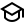
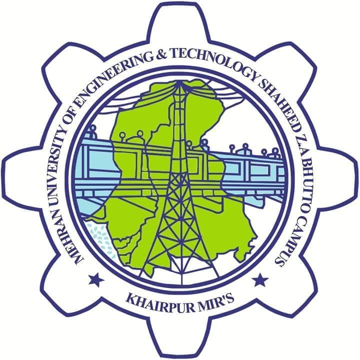

About Us

Mehran City Campus School’s futures literacy program is an innovative educational initiative designed to teach students skills and equip them with knowledge that will help them thrive in the 21st century world. The need for technological and entrepreneurial skills has inspired South Kent to get students hands-on experience in these forums, highlighting the importance of progress and growth through constructive evaluation from teachers.
The "Passion Project" Core: Forget standard homework; students dive deep into subjects they love, guided by mentors, turning interests into tangible projects (think coding a game, writing a symphony, or designing a sustainable city model). Global Citizenship Focus: We integrate worldwide perspectives, teaching not just what to think, but how to think about complex global challenges, making every student a future world-changer. Tech-Forward Learning: We use cutting-edge digital tools, creating interactive digital portfolios and immersive VR learning experiences that bring history to life and make science tangible. Community & Wellness: From our rooftop gardens to mindfulness training, we believe in nurturing the whole person, ensuring students thrive mentally and emotionally alongside their academic growth.